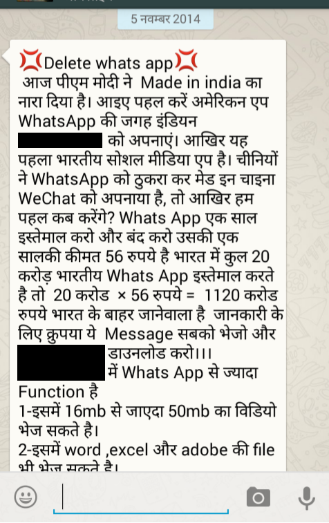

Application
X is a Russian instant messaging application developed by brothers Pavel and Nikolai Durov and is very famous in its home country. However, a recently started chain of WhatsApp messages asking users to leave WhatsApp and join X because it is 'Made in India' (which it isn't) caused a huge surge in X's popularity, so much so that 1.5 million new subscribers joined the service in two days. Which app?

Made with love in Russia